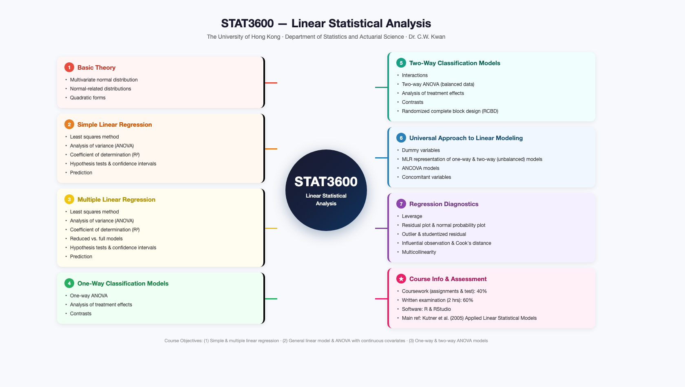

Linear Statistical Analysis · Mind Map + Interactive Question Bank
A visual overview of the 7 main units in STAT3600.

Click any topic to open the related PDF question file(s) stored in Supabase.
Choose one PDF to open.